The original, as published: Tony R. Kuphaldt, Lessons In Industrial Instrumentation, Steady-state gain and lag time. CC BY 4.0, https://creativecommons.org/licenses/by/4.0/. Imported as published, from https://www.ibiblio.org/kuphaldt/socratic/sinst/book/liii.pdf https://www.ibiblio.org/kuphaldt/socratic/sinst/book/liii.pdf
When we speak of a controller’s gain, we refer to the aggressiveness of its proportional control action: the ratio of output change to input change. However, we may go a step further and characterize each component within the feedback loop as having its own gain (a ratio of output change to input change):
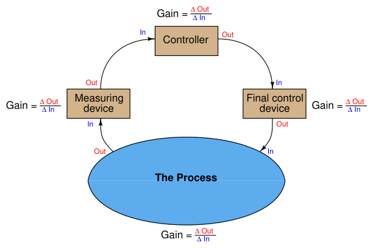
The gains intrinsic to the measuring device (transmitter), final control device (e.g. control valve), and the process itself are all important in helping to determine the necessary controller gain to achieve robust control. The greater the combined gain of transmitter, process, and valve, the less gain is needed from the controller. The less combined gain of transmitter, process, and valve, the more gain will be needed from the controller. This should make some intuitive sense: the more “responsive” a process appears to be, the less aggressive the controller needs to be in order to achieve stable control (and vice-versa). These combined gains may be empirically determined by means of a simple test performed with the controller in manual mode, also known as an “open-loop” test. By placing the controller in manual mode (and thus disabling its automatic correction of process changes) and adjusting the output signal by some fixed amount, the resulting change in process variable may be measured and compared. If the process is self-regulating, a definite ratio of PV change to controller output change may be determined.
For instance, examine this process trend graph showing a manual “step-change” and process variable response:
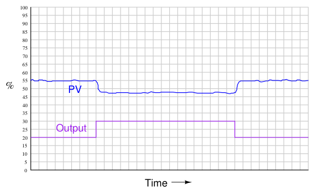
Here, the output step-change is 10% of scale, while the resulting process variable step-change is about 7.5%. Thus, the “gain” of the process7 (together with transmitter and final control element) is approximately 0.75, or 75% (Gain = 7.5%
10% ). Incidentally, it is irrelevant that the PV steps down in response to the controller output stepping up. All this means is the process is reverse-responding, which necessitates direct action on the part of the controller in order to achieve negative feedback. When we calculate gains, we usually ignore directions (mathematical signs) and speak in terms of absolute values. We commonly refer to this gain as the steady-state gain of the process, because the determination of gain is made after the PV settles to its self-regulating value.
Since from the controller’s perspective the individual gains of transmitter, final control element, and physical process meld into one over-all gain value, the process may be made to appear more or less responsive (more or less steady-state gain) just by altering the gain of the transmitter and/or the gain of the final control element. Consider, for example, if we were to reduce the span of the transmitter in this process. Suppose this was a flow control process, with the flow transmitter having a calibrated range of 0 to 200 liters per minute (LPM). If a technician were to re-range the transmitter to a new range of 0 to 150 LPM, what effect would this have on the apparent process gain?
7The general definition of gain is the ratio of output change over input change ( ∆Out
∆In ). Here, you may have noticed we calculate process gain by dividing the process variable change (7.5%) by the controller output change (10%). If this seems “inverted” to you because we placed the output change value in the denominator of the fraction instead of the numerator, you need to keep in mind the perspective of our gain measurement. We are not calculating the gain of the controller, but rather the gain of the process. Since the output of the controller is the “input” to the process, it is entirely appropriate to refer to the 10% manual step-change as the change of input when calculating process gain.
To definitively answer this question, we must re-visit the process trend graph for the old calibrated range:
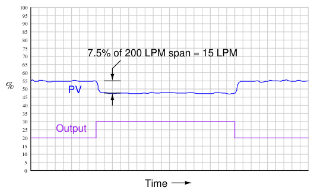
We see here that the 7.5% PV step-change equates to a change of 15 LPM given the flow transmitter’s span of 200 LPM. However, if a technician re-ranges the flow transmitter to have just three-quarters that amount of span (150 LPM), the exact same amount of output step-change will appear to have a more dramatic effect on flow, even though the physical response of the process has the same as it was before:
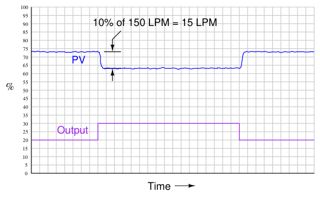
From the controller’s perspective – which only “knows” percent8 of signal range – the process gain appears to have increased from 0.75 to 1, with nothing more than a re-ranging of the transmitter. Since the process is now “more responsive” to controller output signals than it was before, there may be a tendency for the loop to oscillate in automatic mode even if it did not oscillate previously with the old transmitter range. A simple fix for this problem is to decrease the controller’s gain by the same factor that the process gain increased: we need to make the controller’s gain 3
4 what it was
before, since the process gain is now 4
3 what it was before.
The exact same effect occurs if the final control element is re-sized or re-ranged. A control valve that is replaced with one having a different Cv value, or a variable-frequency motor drive that is given a different speed range for the same 4-20 mA control signal, are two examples of final control element changes which will result in different overall gains. In either case, a given change in controller output signal percentage results in a different amount of influence on the process thanks to the final control element being more or less influential than it was before. Re-tuning of the controller may be necessary in these cases to preserve robust control. If and when re-tuning is needed to compensate for a change in loop instrumentation, all control modes should be proportionately adjusted. This is automatically done if the controller uses the Ideal or ISA PID equation, or if the controller uses the Series or Interacting PID equation9. All that needs to be done to an Ideal-equation controller in order to compensate for a change in process gain is to change that controller’s proportional (P) constant setting. Since this constant directly affects all terms of the equation, the other control modes (I and D) will be adjusted along with the proportional term. If the controller happens to be executing the Parallel PID equation, you will have to manually alter all three constants (P, I, and D) in order to compensate for a change in process gain.
8While this is true of analog-signal transmitters, it is not necessarily true of digital-signal transmitters such as Fieldbus or wireless (digital radio). The reason for this distinction is that in a digital-signal transmitter, the reported process variable value is scaled in engineering units rather than percent. Applied to this case, if the flow transmitter gets re-ranged from 0-200 LPM to 0-150 LPM, the controller sees no change in process gain because a change of 10 LPM is still reported as a change in 10 LPM regardless of the transmitter’s range. 9For more information on different PID equations, refer to Section 29.10 beginning on page 2318.
A very important aspect of process gain is how consistent it is over the entire measurement range. It is entirely possible (and in fact very likely) that a process may be more responsive (have higher gain) in some areas of control than in others. Take for instance this hypothetical trend showing process response to a series of manual-mode step-changes:
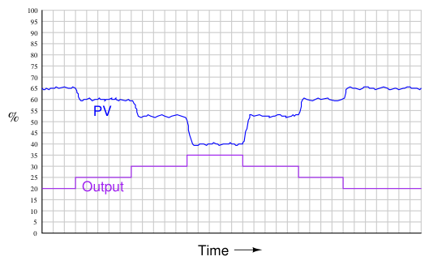
Note how the PV changes about 5% for the first 5% step-change in output, corresponding to a process gain of 1. Then, the PV changes about 7.5% for the next 5% output step-change, for a process gain of 1.5. The final increasing 5% step-change yields a PV change of about 12.5%, a process gain of 2.5. Clearly, the process being controlled here is not equally responsive throughout the measurement range. This is a concern to us in tuning the PID controller because any set of tuning constants that work well to control the process around a certain setpoint may not work as well if the setpoint is changed to a different value, simply because the process may be more or less responsive at that different process variable value. Inconsistent process gain is a problem inherent to many different process types, which means it is something you will need to be aware of when investigating a process prior to tuning the controller. The best way to reveal inconsistent process gain is to perform a series of step-changes to the controller output while in manual mode, “exploring” the process response throughout the safe range of operation. Compensating for inconsistent process gain is much more difficult than merely detecting its presence. If the gain of the process continuously grows from one end of the range to the other (e.g. low gain at low output values and high gain at high output values, or vice-versa), a control valve with a different characteristic may be applied to counter-act the process gain. If the process gain follows some pattern more closely related to PV value rather than controller output value, the best solution is a type of controller known as an adaptive gain controller. In an adaptive gain controller, the proportional setting is made to vary in a particular way as the process changes, rather than be a fixed constant set by a human technician or engineer.
If a square-wave signal is applied to an RC passive integrator circuit, the output signal will appear to have a “sawtooth” shape, the crisp rising and falling edges of the square wave replaced by damped curves:
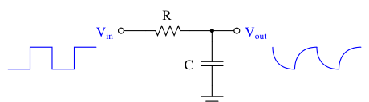
In a word, the output signal of this circuit lags behind the input signal, unable to keep pace with the steep rising and falling edges of the square wave.
Most mechanical and chemical processes exhibit a similar tendency: an “inertial” opposition to rapid changes. Even instruments themselves naturally10 damp sudden stimuli. We could have just as easily subjected a pressure transmitter to a series of pressure pulses resembling square waves, and witnessed the output signal exhibit the same damped response:
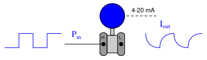
10It is also possible to configure many instruments to deliberately damp their response to input conditions. This is called damping, and it is covered in more detail in section 18.4 beginning on page 1269.
The gravity-drained level-control process highlighted in an earlier subsection exhibits a very similar response to a sudden change in control valve position:
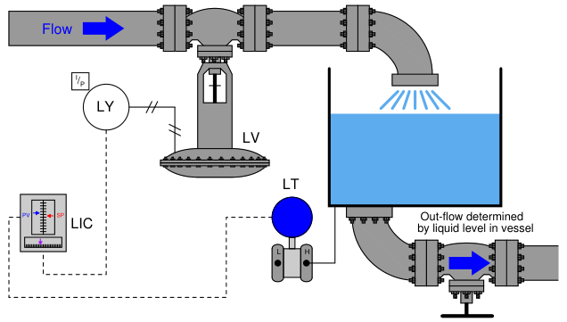
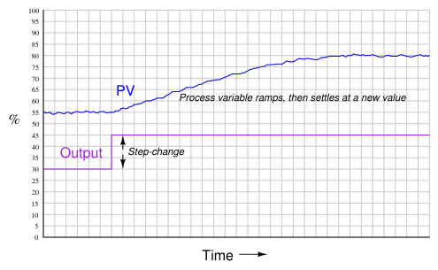
For any particular flow rate into the vessel, there will be a final (self-regulating) point where the liquid level “wants” to settle11. However, the liquid level does not immediately achieve that new
11Assuming a constant discharge valve position. If someone alters the hand valve’s position, the relationship between incoming flow rate and final liquid level changes. level if the control valve jumps to some new position, owing to the “capacity” of the vessel and the dynamics of gravity flow. Any physical behavior exhibiting the same “settling” behavior over time may be said to illustrate a first-order lag. A classic “textbook” example of a first-order lag is the temperature of a cup of hot liquid, gradually equalizing with room temperature. The liquid’s temperature drops rapidly at first, but then slows its approach to ambient temperature as time progresses. This natural tendency is described by Newton’s Law of Cooling, mathematically represented in the form of a differential equation (an equation containing a variable along with one or more of its derivatives). In this case, the equation is a first-order differential equation, because it contains the variable for temperature (T) and the first derivative of temperature ( dT
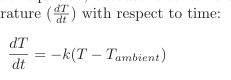
Where, T = Temperature of liquid in cup Tambient = Temperature of the surrounding environment k = Constant representing the thermal conductivity of the cup t = Time
All this equation tells us is that the rate of cooling ( dT
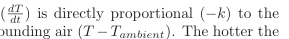
difference in temperature between the liquid and the surrounding air (T −Tambient). The hotter the temperature, the faster the object cools (the faster rate of temperature fall):
Newton’s Cooling Law
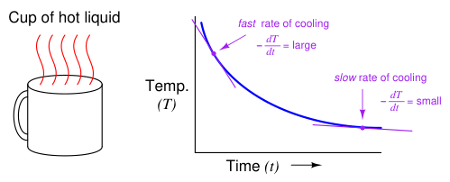
The proportionality constant in this equation (k) represents how readily thermal energy escapes the hot cup. A cup with more thermal insulation, for example, would exhibit a smaller k value (i.e. the rate of temperature loss dT dt will be less for any given temperature difference between the cup
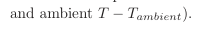
A general solution to this equation is as follows:
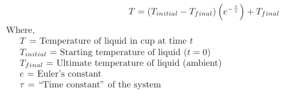
This mathematical analysis introduces a descriptive quantity of the system: something called a time constant. The “time constant” of a first-order system is the amount of time necessary for the system to come to within 36.8% (e−1) of its final value (i.e. the time required for the system to go 63.2% of the way from the starting point to its ultimate settling point: 1 −e−1). After two time-constants’ worth of time, the system will have come to within 13.5% (e−2) of its final value (i.e. gone 86.5% of the way: 1 −e−2); after three time-constants’ worth of time, to within 5% (e−3) of the final value, (i.e. gone 95% of the way: 1 −e−3). After five time-constants’ worth of time, the system will be within 1% (e−5, rounded to the nearest whole percent) of its final value, which is often close enough to consider it “settled” for most practical purposes.
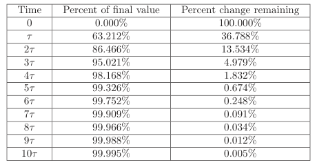
The concept of a “time constant” may be shown in graphical form for both falling and rising variables:
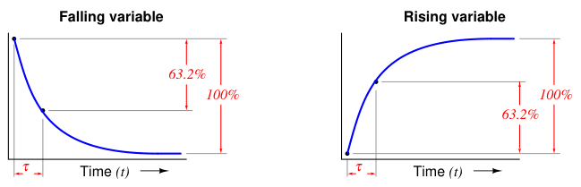
One "time constant" (τ) is the amount of time required for the variable to change 63.2% of the way from its starting point to its ultimate (terminal) value
Students of electronics will immediately recognize this concept, since it is widely used in the analysis and application of capacitive and inductive circuits. However, you should recognize the fact that the concept of a “time constant” for capacitive and inductive electrical circuits is only one case of a more general phenomenon. Literally any physical system described by the same first-order differential equation may be said to have a “time constant.” Thus, it is perfectly valid for us to speak of a hot cup of coffee as having a time constant (τ), and to say that the coffee’s temperature will be within 1% of room temperature after five of those time constants have elapsed.
In the world of process control, it is more customary to refer to this as a lag time than as a time constant, but these are really interchangeable terms. The term “lag time” makes sense if we consider a first-order system driven to achieve a constant rate of change. For instance, if we subjected our RC circuit to a ramping input voltage rather than a “stepped” input voltage – such that the output ramped as well instead of passively settling at some final value – we would find that the amount of time separating equal input and output voltage values was equal to this time constant (in an RC circuit, τ = RC):
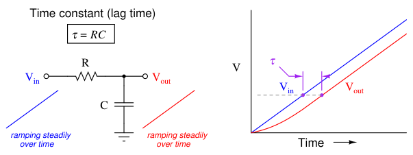
Lag time is thus defined as the difference in time between when the process variable ramps to a certain value and when it would have ramped to that same value were it not for the existence of first-order lag in the system. The system’s output variable lags behind the ramping input variable by a fixed amount of time, regardless of the ramping rate. If the process in question is an RC circuit, the lag time will still be the product of (τ = RC), just as the “time product” defined for a stepped input voltage. Thus, we see that “time constant” and “lag time” are really the exact same concept, merely manifesting in different forms as the result of two different input conditions (stepped versus ramped).
When an engineer or a technician describes a process being “fast” or “slow,” they generally refer to the magnitude of this lag time. This makes lag time very important to our selection of PID controller tuning values. Integral and derivative control actions in particular are sensitive to the amount of lag time in a process, since both those actions are time-based. “Slow” processes (i.e. process types having large lag times) cannot tolerate aggressive integral action, where the controller “impatiently” winds the output up or down at a rate that is too rapid for the process to respond to. Derivative action, however, is generally useful on processes having large lag times.